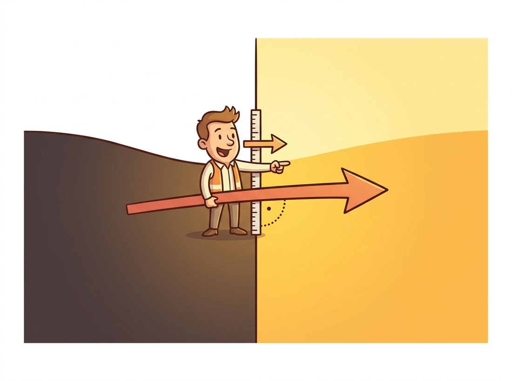

"I don't care what the pixel value is. I care where it's going. Show me change or show me zeros."
An Edge Detector Who Sees Things in Black and White
Derivative filters turn convolution from a beautifier into a measuring instrument: they estimate, at every pixel, how fast brightness changes and in which direction. The gradient maps they produce are the raw material of edge detection in Chapter 9, the orientation histograms of classical recognition, and the patterns that the first layers of trained CNNs in Chapter 19 spontaneously rediscover. This section builds the three classical instruments (Sobel for first derivatives, Laplacian for second, LoG/DoG for scale-tuned blobs) and hammers on the one rule that makes them all usable: differentiation amplifies noise, so every practical derivative filter smooths first.
So far this chapter has produced images for humans: smoothed in Section 3.2, sharpened in Section 3.3. This section produces images for algorithms. A gradient map looks like a ghostly line drawing, not a photograph, but it answers the question downstream code actually asks: where does the scene change, how abruptly, and in what direction?
1. Derivatives on a Pixel Grid Intermediate
An image is a sampled function, so derivatives must become finite differences. For the horizontal partial derivative, three candidates present themselves: forward difference $I(x+1) - I(x)$, backward difference $I(x) - I(x-1)$, and the central difference:
$$ \frac{\partial I}{\partial x} \;\approx\; \frac{I(x+1, y) - I(x-1, y)}{2} $$
The central difference wins on accuracy (its error is second-order in the sample spacing, versus first-order for the others) and on symmetry (it assigns the derivative to the pixel itself, not to a half-pixel offset). As a kernel it is $\frac{1}{2}[\,-1\;\;0\;\;+1\,]$, an antisymmetric row whose weights sum to zero, the signature of every derivative filter: flat regions must map to exactly zero response.
The accuracy gain is not a coincidence. Expand $I(x+1)$ and $I(x-1)$ as Taylor series about $x$, and the difference $I(x+1) - I(x-1)$ cancels the curvature (second-derivative) term that survives in a forward or backward difference, so the leading error drops from order $h$ to order $h^2$. That cancellation is the whole payoff of looking symmetrically to both sides instead of just one.
Stacking both partials gives the gradient vector $\nabla I = (\partial I/\partial x,\; \partial I/\partial y)$, summarized by two scalar fields that downstream code consumes constantly:
$$ \text{magnitude:}\;\; \|\nabla I\| = \sqrt{I_x^2 + I_y^2} \qquad \text{orientation:}\;\; \theta = \operatorname{atan2}(I_y,\, I_x) $$
Here $\operatorname{atan2}(y, x)$ is the two-argument arctangent, which returns the angle of the vector $(x, y)$ over the full $360$-degree range by using the signs of both components to pick the correct quadrant, where a plain $\arctan(y/x)$ could not. The magnitude is large wherever brightness changes quickly (edges), and the orientation points across the edge, perpendicular to its direction. These two numbers per pixel are the most reused intermediate quantity in classical vision. The illustration below fixes the orientation convention that learners most often get backward: the gradient arrow climbs straight across the edge, not along it.

It is natural to assume that the gradient direction $\theta$ runs along an edge, in the direction you would trace the contour. In fact it points in exactly the perpendicular direction: across the edge, from the dark side toward the bright side, along the steepest intensity climb. A vertical edge (a column where brightness jumps left to right) produces a horizontal gradient, $\theta \approx 0$ degrees; the edge runs vertically, the gradient runs across it. Get this backward and every orientation histogram, every HOG bin in Chapter 10, and every non-maximum-suppression step in the Canny detector of Chapter 9 points ninety degrees wrong. To recover the edge's own direction, rotate the gradient by ninety degrees. The second trap rides alongside: a large gradient magnitude marks change, not necessarily a meaningful edge, so unsmoothed noise and fine texture light up just as brightly, which is precisely why this section insists on smoothing before differentiating.
2. Sobel, Prewitt, Scharr: Smoothed Derivatives Intermediate
The bare central difference has a fatal flaw: noise. Differentiation is a high-frequency amplifier (in Chapter 4's terms, its frequency response grows with frequency), and pixel noise is precisely high-frequency. Apply $[\,-1\;0\;+1\,]$ to a real photograph and the output is a blizzard of noise responses with edges barely visible inside it.
Put a number on it: take a flat gray patch with mild sensor noise of standard deviation $\sigma_n = 2$ gray levels, then look for a faint but real edge whose two sides differ by 4 gray levels. The central difference turns that 4-level step into a response of magnitude 4, while the noise, being two independent samples subtracted, produces responses with standard deviation $\sigma_n\sqrt{2} \approx 2.8$. The edge clears the noise floor by barely $1.4\times$: the signal you wanted and the noise you did not are now nearly the same height, and a fixed threshold cannot separate them.
The cure is the chapter's recurring move: smooth first. A single $[1\;2\;1]$ smoothing pass before differentiating drops that noise floor by roughly half and rescues the edge, because smoothing perpendicular to the differentiation direction suppresses noise without diluting the derivative itself. Package both steps into one kernel, using the separability logic of Section 3.6, and you get the Sobel operator:
$$ S_x = \begin{bmatrix} -1 & 0 & +1 \\ -2 & 0 & +2 \\ -1 & 0 & +1 \end{bmatrix} = \begin{bmatrix} 1 \\ 2 \\ 1 \end{bmatrix} \begin{bmatrix} -1 & 0 & +1 \end{bmatrix}, \qquad S_y = S_x^\top $$
Read the factorization: a vertical $[1\;2\;1]$ smoothing column (a tiny Gaussian approximation) times the horizontal derivative row. Prewitt uses uniform $[1\;1\;1]$ smoothing instead; Scharr re-optimizes the weights to $[3\;10\;3]$ for markedly better rotational accuracy, which matters whenever the orientation $\theta$ feeds geometry. All three are the same idea with different smoothing budgets. For larger noise, OpenCV's ksize parameter grows the Sobel kernel ($5 \times 5$, $7 \times 7$), folding in more smoothing.
Every derivative filter that works on real images is a smoothed derivative; the only question is how much smoothing and in which direction. Sobel hides a $[1\;2\;1]$ blur, LoG wears its Gaussian openly in its name, and the Canny detector of Chapter 9 begins by choosing a $\sigma$. Differentiation and smoothing are not opposites in tension; they are inseparable halves of one operation, because measuring change meaningfully requires first deciding the scale at which change counts.
Figure 3.4.1 shows the geometry that makes first and second derivatives complementary instruments: across an edge, the first derivative peaks at the transition, while the second derivative crosses zero there, with lobes of opposite sign on either side.
In code, the cardinal rule is to compute derivatives in a signed float type. A Sobel response is negative on dark-to-light transitions read right-to-left, and storing it in uint8 silently destroys half the signal, the second classic dtype bug of this chapter after Section 3.3's wraparound.
# Estimate the image gradient with Sobel, then turn the two partial
# derivatives into magnitude and orientation. Signed float output is
# mandatory because gradients go negative on dark-to-light transitions.
import cv2
import numpy as np
gray = cv2.imread("staircase.jpg", cv2.IMREAD_GRAYSCALE)
# Signed float output (CV_32F) is essential: gradients go negative.
gx = cv2.Sobel(gray, cv2.CV_32F, 1, 0, ksize=3) # d/dx
gy = cv2.Sobel(gray, cv2.CV_32F, 0, 1, ksize=3) # d/dy
# cartToPolar packages both formulas above: mag = sqrt(gx^2+gy^2), ang = atan2.
mag, ang = cv2.cartToPolar(gx, gy, angleInDegrees=True)
print(f"magnitude: max {mag.max():.0f}, mean {mag.mean():.1f}")
print(f"strong-edge pixels (mag > 100): {(mag > 100).mean():.1%}")
# Representative output:
# magnitude: max 1040, mean 21.3
# strong-edge pixels (mag > 100): 4.7%
# Typical scenes are mostly flat: a few percent of pixels carry the edges.
# For display only: rescale magnitude into [0, 255].
view = cv2.normalize(mag, None, 0, 255, cv2.NORM_MINMAX).astype(np.uint8)cv2.Sobel in signed float, converting to magnitude and orientation via cv2.cartToPolar, and confirming the standard statistic that only a few percent of pixels (here 4.7 percent) in a natural scene are strong-edge pixels.Hand-building $S_x$ and applying it via filter2D, as Section 3.1 taught, takes about ten lines per axis; cv2.Sobel(gray, cv2.CV_32F, 1, 0) is one. The library applies the kernel separably (two 1D passes), offers cv2.Scharr as a drop-in with better rotation accuracy at identical cost, and grows the smoothing via ksize without you re-deriving weights. scikit-image's filters.sobel goes further, returning a pre-normalized magnitude in one call: a 20-to-1 reduction when both axes, magnitude, and scaling are counted.
What are gradient maps for? Thresholding the magnitude with the techniques of Chapter 2 yields a crude but serviceable edge map. Histograms of the orientation channel summarize the dominant directions in a region, an idea that matures into the histogram-of-oriented-gradients (HOG) descriptors of classical recognition and the keypoint orientations of Chapter 10. The example below is among the simplest profitable uses: estimating the skew of a scanned document from its gradient orientations.
Who: A two-person computer vision team at an expense-management software-as-a-service (SaaS) company, ingesting photographed receipts from a mobile app.
Situation: Their optical character recognition (OCR) engine's accuracy fell off a cliff when receipts were rotated more than about 3 degrees, and users photograph receipts at every angle physics permits.
Problem: A learned orientation model was on the roadmap, but the backlog was immediate, and the team had two weeks and a CPU-only inference budget.
Decision: A 30-line classical fix: Sobel gradients on a downscaled grayscale image, keep pixels with strong magnitude, histogram their orientations into half-degree bins, and take the dominant bin (text lines produce overwhelming horizontal-edge mass) as the skew estimate, then counter-rotate before OCR.
Result: Median absolute skew after correction fell below 0.4 degrees on a 5,000-receipt validation set; end-to-end OCR field accuracy rose 11 points; latency cost was 9 ms per image on one CPU core. The "interim" fix outlived the roadmap item, which was eventually descoped.
Lesson: Gradient orientation is nearly free, and aggregated over a whole image it is robust to exactly the local noise that breaks per-pixel decisions. Before reaching for a model, check whether the statistic you need is already lying in the gradient field.
The receipt story above is a portfolio project hiding in plain sight. With only cv2.Sobel and cv2.cartToPolar from this section, you can build a command-line tool that straightens any photographed page: compute the gradient orientation on a downscaled grayscale copy, keep the strong-magnitude pixels, histogram their angles into half-degree bins, read the dominant bin as the skew (text lines pile up an overwhelming horizontal-edge mass), and counter-rotate with cv2.warpAffine. It runs in milliseconds on a CPU, needs no training data, and visibly improves any downstream OCR. Point it at a folder of crooked scans and the before-and-after grid is exactly the kind of artifact that reads well in an interview.
3. The Laplacian: Change of Change Intermediate
The Laplacian $\nabla^2 I = \partial^2 I/\partial x^2 + \partial^2 I/\partial y^2$ sums the unmixed second derivatives. Applying the finite-difference recipe twice per axis and adding gives the standard 4-neighbor kernel, with an 8-neighbor variant that includes diagonals:
$$ \nabla^2_{4} = \begin{bmatrix} 0 & 1 & 0 \\ 1 & -4 & 1 \\ 0 & 1 & 0 \end{bmatrix} \qquad \nabla^2_{8} = \begin{bmatrix} 1 & 1 & 1 \\ 1 & -8 & 1 \\ 1 & 1 & 1 \end{bmatrix} $$
Both are rotationally symmetric (unlike Sobel, the Laplacian has no preferred direction; it measures total curvature in one number) and both sum to zero. You met the 4-neighbor version inside Section 3.3's sharpening kernel, and Figure 3.4.1's bottom panel shows its behavior at an edge: a positive lobe, a negative lobe, and a zero crossing at the transition itself. Zero crossings localize edges more precisely than thresholded gradient peaks, and they form closed contours, properties that made them the foundation of an entire edge-detection school. Their weakness is the theme of this section squared: two rounds of differentiation amplify noise twice as enthusiastically as one, so the raw Laplacian of a photograph is unusable without prior smoothing. Which leads directly to the section's final construction.
4. LoG and DoG: Derivatives With a Scale Dial Advanced
Smooth with a Gaussian, then take the Laplacian. By the associativity from Section 3.1, the two convolutions collapse into one kernel, the Laplacian of Gaussian:
$$ \mathrm{LoG}_\sigma(x, y) = \nabla^2 (G_\sigma * I) = (\nabla^2 G_\sigma) * I, \qquad \nabla^2 G_\sigma(r) = \frac{r^2 - 2\sigma^2}{\sigma^4}\, G_\sigma(r) $$
The kernel looks like a sombrero: a negative center pit ringed by a positive annulus (or the inverse, by sign convention). It responds maximally to blobs, roughly circular regions of size matched to $\sigma$, dark-on-light or light-on-dark, and it crosses zero on their boundaries. The parameter $\sigma$ is now a genuine instrument dial: sweep it and the filter detects structure at chosen scales, the idea formalized by Marr and Hildreth in 1980 as a theory of biological edge detection and later industrialized by scale-space theory in Chapter 4.
Because building exact LoG kernels for many sigmas is wasteful, practice substitutes the Difference of Gaussians: $\mathrm{DoG} = G_{k\sigma} * I - G_{\sigma} * I$, which approximates the LoG closely when $k \approx 1.6$ and costs only Gaussian blurs, which Section 3.6 makes nearly free. A stack of DoG responses across scales is precisely the detection engine inside SIFT, the keypoint detector of Chapter 10; the code below builds one level of it.
# Build the Laplacian-of-Gaussian two ways and show they agree: the exact
# LoG (Gaussian blur then Laplacian) and the cheap Difference-of-Gaussians
# at scale ratio 1.6. Their per-pixel correlation confirms DoG approximates LoG.
import cv2
import numpy as np
gray = cv2.imread("cells.png", cv2.IMREAD_GRAYSCALE).astype(np.float32)
# --- LoG: smooth, then Laplacian (associativity makes this exact) ---
sigma = 2.0
smooth = cv2.GaussianBlur(gray, (0, 0), sigma)
log = cv2.Laplacian(smooth, cv2.CV_32F, ksize=3)
# --- DoG: difference of two Gaussians approximates LoG at ~zero cost ---
k = 1.6 # canonical scale ratio
dog = cv2.GaussianBlur(gray, (0, 0), k * sigma) \
- cv2.GaussianBlur(gray, (0, 0), sigma)
# The two responses are proportional; compare after normalization.
corr = np.corrcoef(log.ravel(), dog.ravel())[0, 1]
print(f"LoG vs DoG correlation: {corr:.3f}")
# Representative output:
# LoG vs DoG correlation: 0.987 (DoG is a positive multiple of LoG here)The LoG's sombrero profile shows up in wet biology: the center-surround receptive fields of retinal ganglion cells, mapped by Kuffler in 1953, are well modeled by a Difference of Gaussians. Your retina has been running DoG filtering for several hundred million years of evolutionary uptime, which makes it the most field-tested image-processing deployment in existence.
Hand-designed derivative kernels have two modern afterlives. First, they keep being rediscovered: visualize the first convolutional layer of nearly any trained image network from Chapter 19 and a large fraction of the learned kernels are oriented edge and blob filters, Sobel's and LoG's statistical descendants. Second, edge detection itself moved to generation: DiffusionEdge (Ye et al., AAAI 2024, arXiv:2401.02032) trains a diffusion model to emit crisp single-pixel edge maps directly, outperforming CNN edge detectors that needed post-hoc thinning. Meanwhile the largest consumer of classical edge maps in 2024-2026 is, unexpectedly, image generation: ControlNet-style conditioning feeds Canny or HED edge maps into diffusion models to control composition, a pipeline Chapter 35 dissects. The humble gradient survived the deep learning revolution on both sides of the camera.
Locating edges so carefully sharpens a tension that has run under every section so far: the linear smoothers of Section 3.2 destroy the very edges this section works to find, because a fixed kernel cannot tell a boundary worth keeping from noise worth removing. Section 3.5 finally resolves that conflict with filters whose weights depend on the image itself, smoothing within regions while leaving the edges measured here intact.
For each kernel in this section ($S_x$, $S_y$, $\nabla^2_4$, $\nabla^2_8$, and a LoG), state: the sum of its weights, its symmetry under 180-degree rotation (and hence whether the convolution-versus-correlation flip from Section 3.1 matters for it), and what it returns on a perfect linear intensity ramp $I(x,y) = 3x + 7$. The ramp answers reveal the deepest difference between first- and second-derivative filters.
Using only cv2.GaussianBlur and NumPy, implement a multi-scale DoG blob detector: compute DoG responses for $\sigma \in \{2, 4, 8, 16\}$ (ratio 1.6), find local extrema above a threshold in each response with scipy.ndimage.maximum_filter, and draw a circle of radius $\sqrt{2}\sigma$ at each detection. Run it on an image of coins or cells and report how detected radii track object sizes across scales.
Add Gaussian noise of $\sigma_n \in \{2, 5, 10, 20\}$ to a clean test image and compute (a) the raw central-difference gradient, (b) Sobel with ksize=3, and (c) Sobel after a Gaussian pre-blur of $\sigma = 2$. For each, measure the fraction of "strong edge" pixels (magnitude above a fixed threshold) that occur in regions you know to be flat. Plot false-edge fraction versus noise level for the three pipelines and explain the ordering using the smoothed-derivative principle from this section.